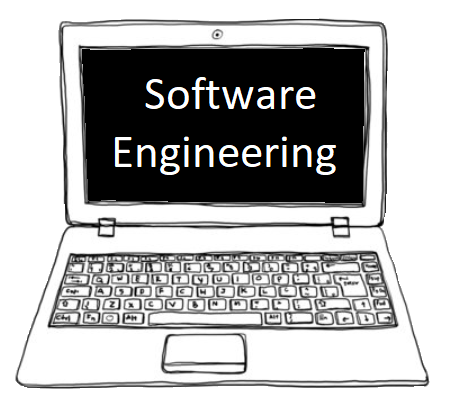

É um conjunto de atividades, processos e ferramentas para para o desenvolvimento de software. A engenharia de software abrange todo o processo do desenvolvimento de software, como: levantamento de requisitos, projeto, implementação, testes, implantação e operação dos sistemas.
É o profissional responsável em planejar, projetar e acompanhar o desenvolvimento de sistemas de software. É o profissional com formação em cursos de graduação, como: Engenharia de Software, Engenharia da Computação, Sistemas de Informação, Engenharia de Automação e Ciência da Computação.
Trata-se do conjunto de instruções lógicas que serão executadas por um computador ou sistema de processamento de dados, para orientar o que uma máquina deverá fazer.
PRINCIPAIS DISCIPLINAS DA ENGENHARIA DE SOFTWARE
Há muitas disciplina relacionadas à Engenharia de Software, entre elas destacam-se: Engenharia de requisitos, que
tem como principal foco a construção do documento de requisitos incluindo os requisitos funcionais e não funcionais.
A Modelagem de Software é outra disciplina importante, nessa disciplina é apresentada a UML, Linguagem de Unificada
de Modelagem, onde a partir de modelos gráficos todo o sistema é documentado. Entre os principais diagramas podemos
destacar: o diagrama de Caso de Uso, o diagrama de Classes e o digrama de Componentes. Por fim, entre outras tantas
disciplinas relacionadas à Engenharia de Software podemos destacar a disciplina de Estrutura de dados, trata-se de
uma disciplina relacionada à programas de algoritmos usados em várias áreas da Ciência da Computação, como as Filas,
Listas, Pilhas e a Complexidade dos Algoritmos.